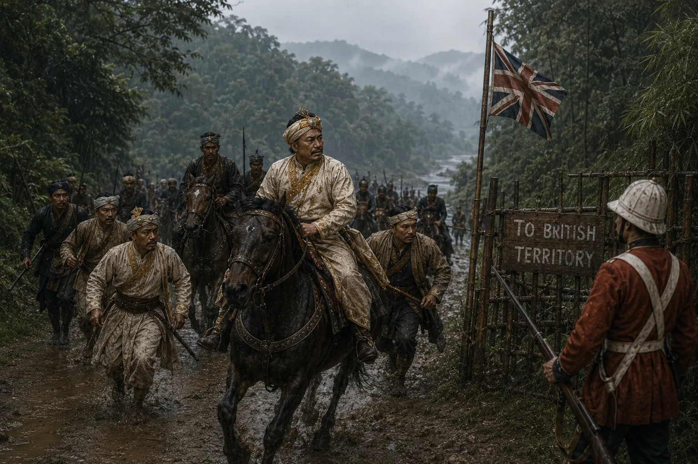

Chandrakanta's Resistance and Flight from Burmese Reign of Terror
1821 · The days of the Burmese

When Burmese attempt to murder him, Chandrakanta flees to British frontier and organizes armed resistance against Burmese pillagers.
Sources have not yet been catalogued for this record.
People: Chandrakanta Singha (Sudingphaa)
Open this scene in the interactive archive · Follow this event on MAP